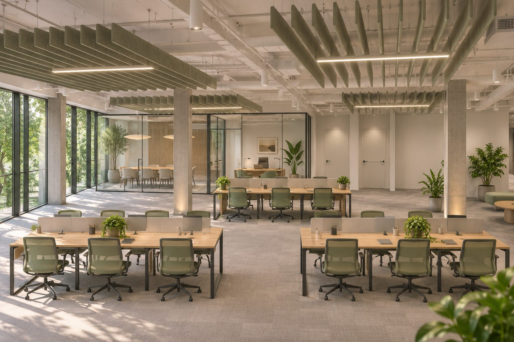
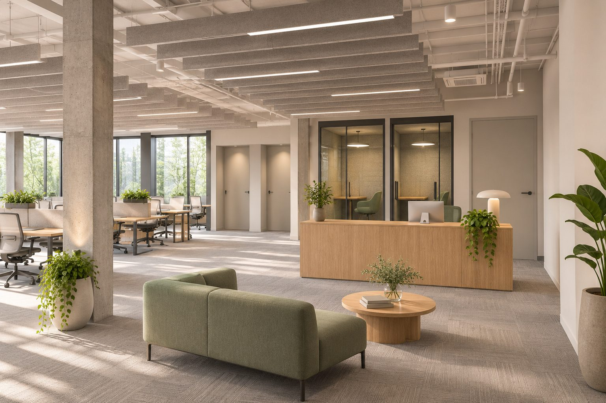
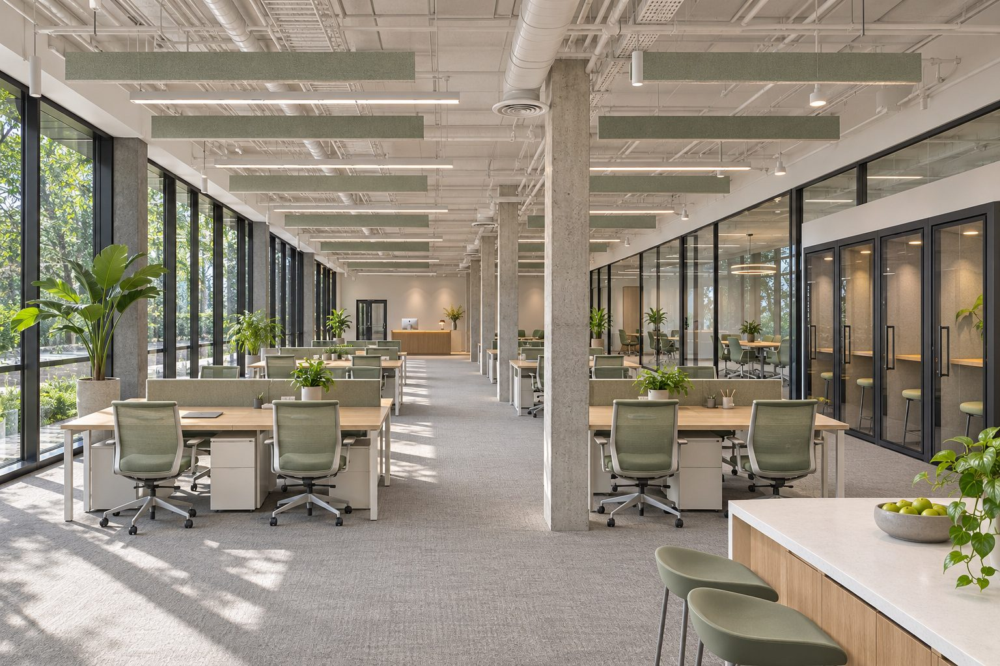
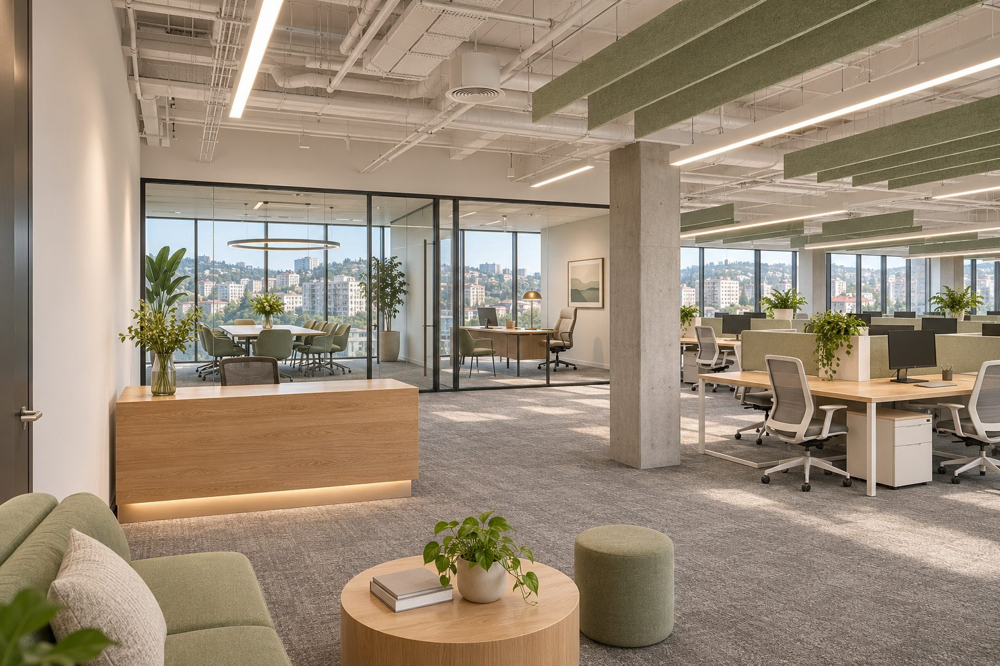
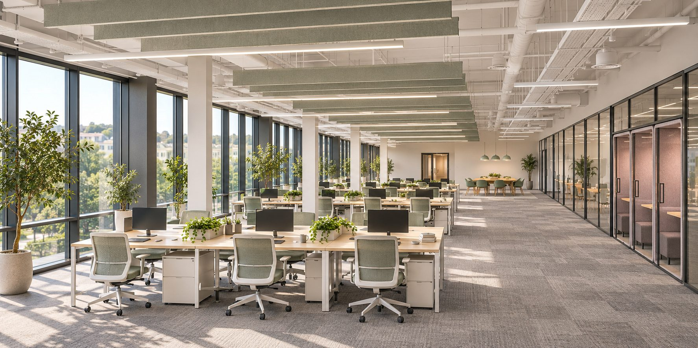
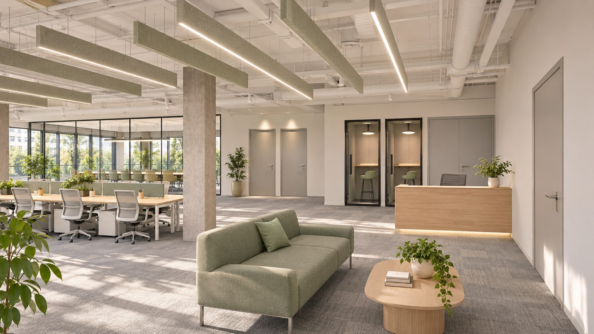
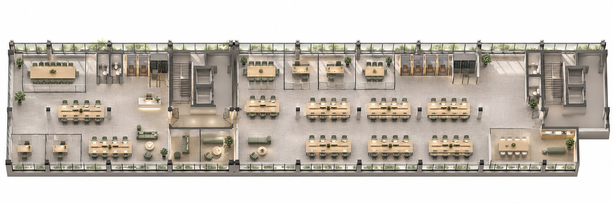
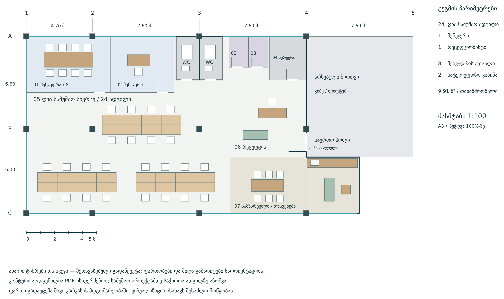
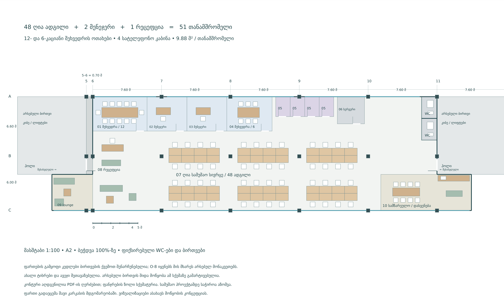
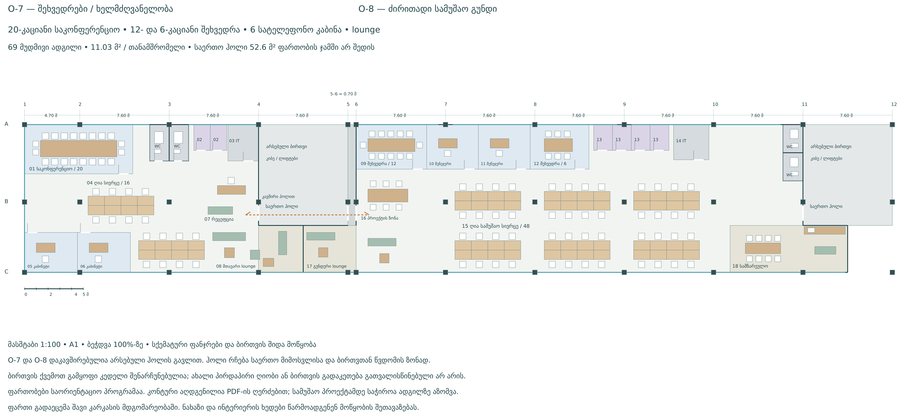

1536×1024 → 1536×1024, ჩაშენებული სურათი (xref 27), JPEG q82

1536×1024 → 1536×1024, ჩაშენებული სურათი (xref 35), JPEG q82

1536×1024 → 1536×1024, ჩაშენებული სურათი (xref 43), JPEG q82

1536×1024 → 1536×1024, ჩაშენებული სურათი (xref 51), JPEG q82

1536×1024 → 1536×1024, ჩაშენებული სურათი (xref 63), JPEG q82

1672×941 → 1672×941, ჩაშენებული სურათი (xref 66), JPEG q82

1536×1024 → 1536×1024, ჩაშენებული სურათი (xref 69), JPEG q82

1536×1024 → 1536×1024, ჩაშენებული სურათი (xref 72), JPEG q82

1774×887 → 1774×887, ჩაშენებული სურათი (xref 84), JPEG q82

1672×941 → 1672×941, ჩაშენებული სურათი (xref 92), JPEG q82

1672×941 → 1672×941, ჩაშენებული სურათი (xref 100), JPEG q82

1672×941 → 1672×941, ჩაშენებული სურათი (xref 103), JPEG q82

2172×724 → 2172×724, ჩაშენებული სურათი (xref 10), JPEG q82

2822×1678, 200 dpi, სათაურის ზოლი და მინდვრები მოჭრილი (A3)
PDF ↗
ორიგინალი ვექტორული გვერდი, A3, 28 KB

4380×2606, 200 dpi, სათაურის ზოლი და მინდვრები მოჭრილი (A2)
PDF ↗
ორიგინალი ვექტორული გვერდი, A2, 30 KB

6020×2793, 200 dpi, სათაურის ზოლი და მინდვრები მოჭრილი (A1)
PDF ↗
ორიგინალი ვექტორული გვერდი, A1, 31 KB